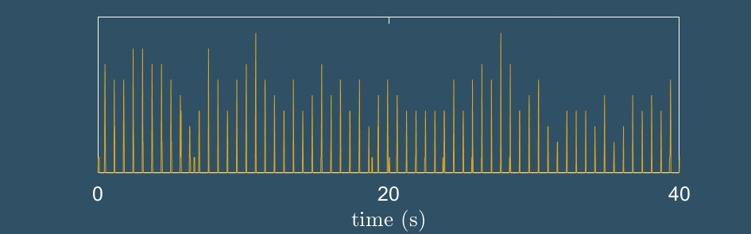
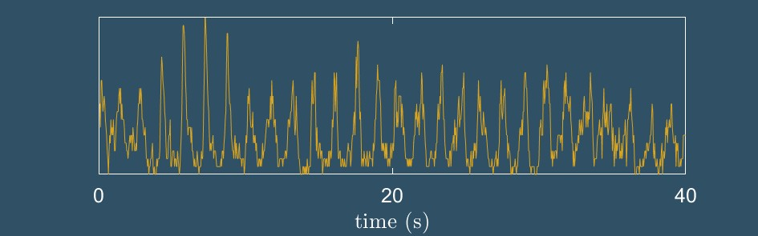
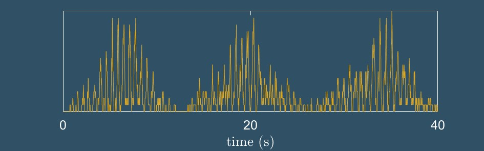

patterns
collective harmony
As they flash, fireflies interact with one another through visual connections. And also with an often complex environment, crowded with grass, bushes and trees, which restricts their vision and movement. The network of interactions, in conjonction with specific behavioral responses, can sometimes create harmonious collective patterns.
The most spectacular example of such patterns is synchrony. Synchronous fireflies blink in concert on the same tempo, creating a collective beat of light. A few rare species have been proven to synchronize, but it is not clear how many are actually capable of it. Those who synchronize start in pairs, and if there are enough of them the rythm will spread across the swarm.
But synchrony is not a monolith. It can take different shapes and forms, like musicians on the same tempo can still play with a different beats.
Synchrony
There are at least 3 different synchronous patterns produced by North American species. The easiest way to characterize a pattern is to record a movie of the collective display and simply count how many flashes appear in each frame. This outlines a temporal signal (time series) which translates a complex phenomenon into a simple motif.
snap synchrony
Snap synchrony denotes sharp and precise coordinated blinks, like a troupe snapping fingers. Flashes repeat continuously and periodically, typically every 0.5s to 1s, for hours. This is the pattern created by Photuris frontalis fireflies, which also happen to have been nicknamed "Snappies"! You can observe Snappies at several different spots across the Southeast US.

breath synchrony
Breath synchrony is a variation from snap synchrony where the spikes widen, like a respiration. Individual flashes last longer, and the group is less precise in the timing of their flashes, which creates a bit more of a curve in the pattern. But these spikes are also precisely periodic. Breath synchrony can be seen in Photinus concisus fireflies in Texas and Photuris tremulans in the Southeast.

burst synchrony
Burst synchrony is a more complex motif. It consists of braod spikes happening within periodic bursts of activity. Between the burst there is (almost) absolute darkness. Both the spikes and bursts are highly periodic. Burst synchrony has been observed in famous species Photinus carolinus which displays all around the Smoky Mountains and central Appalachians. But also in a distant cousin, Photinus knulli , which is currently found exclusively in Arizona, some 2000 miles away!

Spatiotemporality
What matters is not just when flashes occur, but also where. Indeed, a firefly blinks at a certain instant t in conjonction with a specific location (x,y,z) in three dimensional space. The spatial distribution of flash occurrences may form an interesting pattern in itself. And combined, space and time correlations offer a glimpse at how fireflies interact.
How does one evaluate the 3D position of a flash? Using stereoscopic video recordings. Just like with two eyes you are enabled depth perception, with two cameras filming the same scene a computer can reconstruct the distances of the features. This is a process called triangulation , for reasons which might seem obvious.
By filming firefly swarms with two cameras, you can obtain the (x,y,z,t) coordinates of every flash. In synchronous displays, this technique has revealed some propagation mechanisms akin to a wave. The flash information nucleates in a small region of the swarm, and then propagates from there. This illuminate a network of visual connection, like of social network of information.
Sympathy beyond synchrony
Synchrony is the most regular of all patterns, but it may not be the only one that emerges from bahaving collectively. In fact, it is an interesting challenge to attempt to uncover other signatures of collective behavior that don't involve something as obvious as all flashes happening at the same time. The basis for this analysis relies on statistics and correlations. This is still a work in progress.